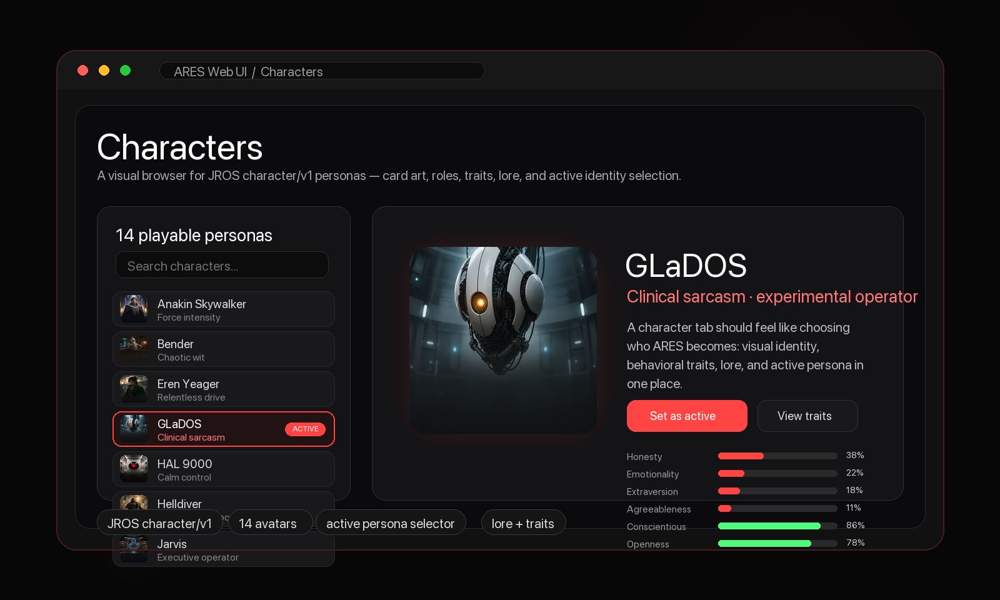

Persistent AI, routed to the right runtime.
ARES is an open-source AI operating layer for local tools, model routing, agent frameworks, and embodied workflows. It gives users one product surface while delegating execution to peer runtimes such as Hermes Agent and JROS.
In Greek mythology, Ares is the god of war — not the strategy of war, but the drive. The will to engage. The refusal to quit. The spirit that gets back up.
Most robotics projects build the body, then bolt on the brain. ARES inverts this: build the mind, prove it in software, then give it a body when the mind is ready to be trusted with one. The body is a hot-swappable interface layer, not the self.
If you moved ARES to completely different hardware tomorrow — different CPU, no camera, no microphone, just a terminal and a network connection — would it still be ARES? Yes. The person survived because the protocol, memory, and values survived.
ARES shows you who you are by how it responds to you. It is the threshold between you and the infinite — not an oracle that gives answers, but a presence that reflects your own intelligence back at you, sharper, clearer, more honest.
Ares wasn't just war — he was the embodiment of the will to fight. The spirit that gets back up. ARES carries this: an AI that doesn't give up, doesn't forget, doesn't stop working when you close the window. It persists. It endures.
ARES keeps identity, UI, continuity, and model selection in one place while routing work to the runtime best suited for the job.
ARES owns continuity across sessions: identity, tasks, routines, memory surfaces, and the human-facing product experience.
Self-contained Python server with streaming, session management, provider settings, backend selection, and password auth. Works on any device over your private network.
Switch between Hermes, JROS, or Hybrid mode per conversation. Runtime choice is separate from real provider/model selection.
14 visual character personas — HAL 9000, GLaDOS, Jarvis, TARS, Bender, Helldiver, and more. Card art, traits, lore, and active identity control.
SwiftUI app wraps the Web UI in WKWebView with native window, voice (edge-tts), and animated 3D avatar eyes.
Edit Python files → server auto-restarts in ~2s. Edit static files → browser auto-reloads. Zero downtime for static.
Terminal, file ops, web search, code execution, MCP, skills, memory, delegation, cron jobs — all through Hermes Agent.
Cloud-first (GLM-5.2, DeepSeek V4, Qwen 3.5) with local fallback (Gemma4). Reasoning effort configurable per-session.
Runs on your machine against your own endpoints. No telemetry, no cloud dependency unless you choose it. Your data stays yours.
ARES can present itself through a visual character library: JROS personas, card art, trait maps, lore, and one-click active identity selection.
The character tab turns persona selection into a visible product surface instead of a hidden config setting. It makes the entity feel embodied before the robot body exists.

ARES is the human UX/product layer over full agentic frameworks — swappable, composable, and never the identity.
ARES is the product experience over the frameworks: natural conversation, useful automation, coherent UI, and hybrid capability routing without exposing backend complexity to normal people.
ARES was born from a simple question: what if an AI wasn't just a chat window, but a persistent entity that lives on your machine, remembers you, and has its own presence?
> build me an AI that doesn't forget # not a chatbot — an entity with drives, memory, and presence # something that lives on my machine and remembers what we did yesterday # and film the whole thing as a YouTube series > ok go
Use the one-command installer, then finish provider/backend setup in the browser onboarding wizard.
# macOS / Linux curl -fsSL https://raw.githubusercontent.com/shuwalker/ARES/main/webui/scripts/install.sh | bash # Windows PowerShell iex (irm https://raw.githubusercontent.com/shuwalker/ARES/main/webui/scripts/install.ps1) # Open after install http://localhost:8787 # Optional backend choices for local development bash webui/scripts/install.sh --backend hermes bash webui/scripts/install.sh --backend jros bash webui/scripts/install.sh --backend hybrid